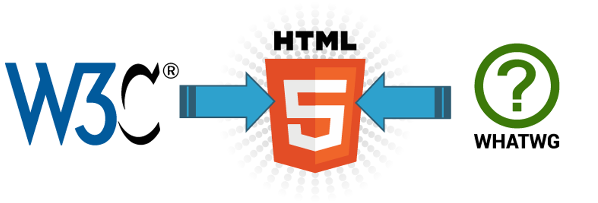
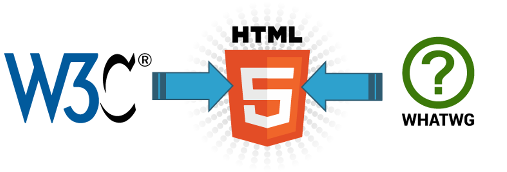

HTML (Hyper Text Markup Language) é uma Linguagem de Marcação de Hipertexto utilizada para criação de páginas da Web. Essa é a linguagem que o seu navegador (Browser) decodifica para exibir as páginas. (FERREIRA & EIS, ONLINE, p.7)
Breve Histórico da evolução do HTML
Desde a invenção da web em 1992 por Tim Berners-Lee, a HTML evoluiu a cada versão lançada, sendo a versão mais atual a HTML5. (SILVA, 2011, p.21)
O que é o W3C
O W3C (World Wide Web Consortium), criado em outubro de 1994 por Tim Berners-Lee, é um consórcio internacional formado por empresas, instituições, pesquisadores, desenvolvedores e público em geral. A finalidade desse consórcio é desenvolver a web a seu potencial máximo, criando normas, especificações e padronizações que se aplicam aos mais diversos segmentos e setores da web. (W3C, ONLINE)
A formação da W3C
Durante os próximas anos, o W3C publicou várias especificações (chamadas “recomendaçções”) incluindo o HTML, o formato de imagens PNG, e as Folhas de Estilo em Cascata versões 1 e 2.
O que é o w3schools
W3Schools é um site para desenvolvedores web, onde você pode encontrar tutoriais e referências das linguagens de desenvolvimento para web, assim como HTML, CSS, JavaScript, PHP, SQL, W3.CSS e Bootstrap
Curiosidade
Uma curiosidade a respeito da evolução do HTML é que em um workshop da W3C em 2004 as empresas Mozila e Opera apresentaram uma proposta para evolução do HTML4 para o HTML5, mas a W3C se recusou a dar continuidade a essa ideia. Mas pouco tempo depois, as empresas Fundação Mozila, Apple e Opera anunciaram a criação de uma organização que visava a evolução do HTML, tal organização foi denominada WHATWG, a qual passou a desenvolver a linguagem XHTML
W3C X WHATWG
 

O que é e para que serve o CSS
CSS (Cascading Style Sheets — Folhas de Estilos em Cascata) é uma extensão da HTML, uma linguagem de estilo, ou seja, fazendo o uso dessa linguagem é possível definir como o conteúdo dos elementos HTML serão apresentados na página da Web. Essa extensão foi incorporada à linguagem HTML a partir de sua quarta versão em 1997. O CSS3 (que vamos aprender) é a segunda versão da linguagem CSS. Separar o conteúdo do documento HTML de sua formatação. Forma antiga de se formatar conteúdos: TEXTO AZUL TAMANHO 12
Ou seja, se você tivesse 10 tipos diferentes de fontes em uma mesma página, então teria de fazer esta formatação 10 vezes. Até que fazer isto em uma só página, tudo bem, mas se o site tivesse 100 páginas então seria muito trabalhoso manter e alterar estas fontes, não acha?
Benefícios do uso do CSS
Controle do layout de diversos documentos utilizando apenas uma folha de estilos. Maior precisão no controle do layout e design Aplicação de diferentes layouts para adaptação do conteúdo e design em diferentes formas de apresentação (impressoras, telas de diferentes tamanhos, etc.) (W3CSCHOOL, ONLINE)
Editores HTML
Os editores HTML são os softwares que utilizamos para criar as páginas da web empregando as linguagens de marcação e de estilo. Tais editores possuem diversas funcionalidades que auxiliam no processo de desenvolvimento da página, proporcionando, por exemplo a visualização do projeto tanto em linhas de códigos quanto em design de apresentação
Diferença entre um arquivo de extensão .html e .htm
A extensão .html é a mais usual e comum hoje em dia. A extensão .htm é mais antiga, época em que o sistema DOS era um dos mais utilizados e só aceitava extensões de arquivos que contivessem 3 caracteres (por exemplo: doc, txt, exe…)
Exemplos de editores HTML Free
Brackets (Disponível em : http://brackets.io/) HTML Kit (versão 292 free) (disponível para download em :
http://www.htmlkit.com/download/
Note Pad ++ versão 7.3.3 (disponível para download em:
https://notepad-plus-plus.org/download/v7.3.3.html
Sublime Text - disponível em :